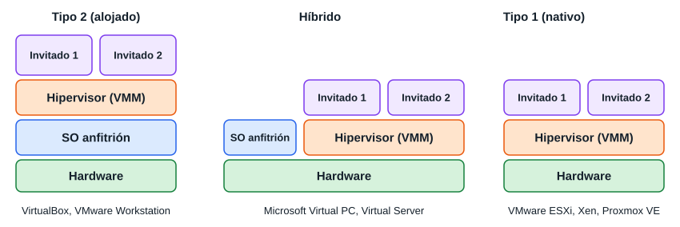
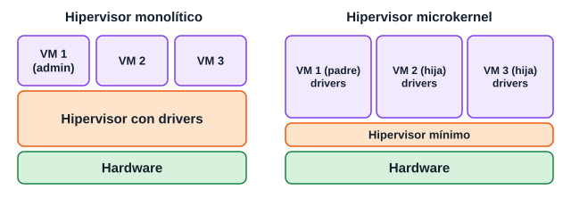
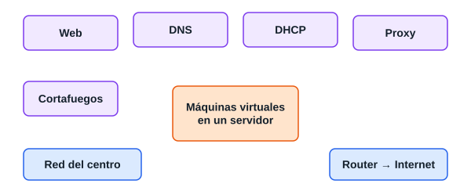
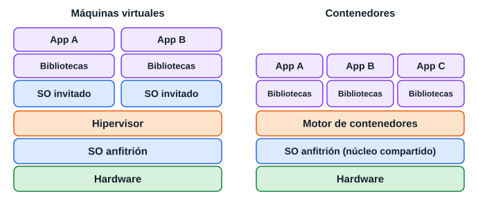
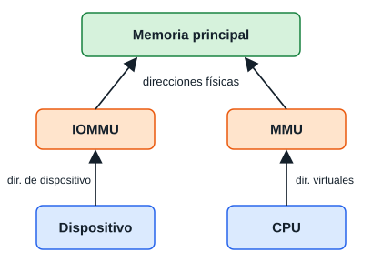
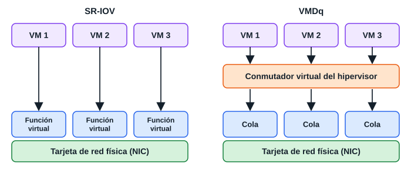

Viene del material de clase (en el aula aparece como «UT 3»). Los apartados 7 y 11 están añadidos a partir de la programación. La guía de Ubuntu Server está en su propia página.
En informática, una máquina virtual es un software que emula a una computadora y puede ejecutar programas como si fuese una computadora real. Uno de los usos domésticos más extendidos es ejecutar sistemas operativos para «probarlos».
Según su funcionalidad y su grado de equivalencia a una verdadera máquina, hay dos grandes categorías:
También llamadas máquinas virtuales de hardware.
A veces llamadas «máquinas virtuales de aplicación». Se ejecutan como un proceso normal dentro de un sistema operativo y soportan un solo proceso.
Ejemplos: la máquina virtual de Java y, en .NET de Microsoft, el Common Language Runtime.
Se suele llamar virtualización completa (full virtualization) y se puede implementar con un hipervisor de tipo 1 o de tipo 2:
Algunas emulan hardware que solo existe como especificación:

| Tipo | Dónde corre | Rendimiento | Uso |
|---|---|---|---|
| Tipo 1, nativo o bare-metal | Directamente sobre el hardware | Alto | Servidores y centros de datos |
| Tipo 2, alojado | Sobre un sistema operativo | Menor | Escritorio, pruebas, estudio |
| Híbrido | Conviven el SO anfitrión y el hipervisor sobre el hardware | Intermedio | Virtual PC y Virtual Server de Microsoft |
La diapositiva pone como ejemplos de tipo 2 la JVM y .NET CLR. Son máquinas virtuales de proceso, no de sistema; para el examen pregunta al profesor si quiere ese ejemplo, y si te piden un hipervisor de tipo 2 di VirtualBox o VMware Workstation.


Una instantánea (snapshot) guarda el estado de la máquina para volver a él.
| Máquina | Lenguaje |
|---|---|
| Common Language Runtime | C#, Visual Basic .NET, J#, Managed C++ |
| EiffelStudio | Eiffel |
| Erlang | Erlang |
| Forth virtual machine | Forth |
| Glulx | Glulx, Z-code |
| Harbour virtual machine | Harbour |
| Hec | Hasm Assembler |
| Inferno | Limbo |
| Java virtual machine | Java, Nice, NetREXX |
| Low Level Virtual Machine (LLVM) | C, C++, Stacker |
| Lua | Lua |
| Macromedia Flash Player | SWF |
| MMIX | MMIXAL |
| Neko virtual machine | Neko y haXe |
| O-code machine | BCPL |
| P-code machine | Pascal |
| Parrot | Perl 6 |
| Perl virtual machine | Perl |
| Portable.NET | C#, Visual Basic .NET, J#, Managed C++ |
| YARV, Rubinius | Ruby |
| ScummVM | Scumm |
| SECD machine | ISWIM, Lispkit Lisp |
| Sed | El editor de flujo puede verse como una VM con 2 espacios de almacenamiento |
| Smalltalk virtual machine | Smalltalk |
| SQLite virtual machine | Códigos de operación de SQLite |
| Squeak virtual machine | Squeak |
| SWEET16 | — |
| TrueType virtual machine | TrueType |
| Valgrind | Chequeo de accesos a memoria y fugas en código x86/x86-64 bajo Linux |
| VX32 | Virtualización de aplicaciones para código nativo |
| Virtual Processor (VP) | Tao Group (Reino Unido) |
| Waba | Similar a Java, para dispositivos pequeños |
| Warren Abstract Machine | Prolog, CSC GraphTalk |
| Z-machine | Z-Code |
| Zend Engine | PHP |
| Elemento | Valor |
|---|---|
| Procesador | 550 MHz mínimo, 1 GHz recomendado |
| RAM | 256 MB como mínimo, más la que se asigne a la máquina virtual |
| Disco | Mínimo 2 GB, más lo que usen las máquinas virtuales |
| Tipos de procesador | Intel Celeron, Pentium III, Pentium 4, Xeon; AMD Opteron, Athlon, Athlon64, AthlonX2, Sempron o Duron |
| Sistema base | Windows XP SP2 y Windows Server 2003 o posterior |
| Elemento | Valor |
|---|---|
| Procesador | x64 con Intel VT o AMD-V habilitada. Debe estar disponible y habilitada la prevención de ejecución de datos (DEP): bit XD de Intel o NX de AMD |
| Velocidad | Mínimo 1,4 GHz; recomendada 2 GHz o más |
| RAM | Mínimo 1 GB; recomendada 2 GB o más, más la de cada invitado; máximo 1 TB |
| Disco | Mínimo 8 GB; recomendado 20 GB o más, más lo de cada invitado |
| Otros | DVD-ROM, Super VGA (800×600) o más, teclado y ratón |
| Elemento | Valor |
|---|---|
| Nombre | Nueva máquina virtual |
| Ubicación | La predeterminada del servidor |
| Memoria | 512 MB |
| Conexión de red | No conectada |
| Disco duro virtual | Expansión dinámica, 127 GB |
| Opciones de instalación | Ningún medio especificado |
| Controladora SCSI | Sin discos. Requiere servicios de integración en el invitado |

| Aspecto | Máquina virtual | Contenedor |
|---|---|---|
| Sistema | Uno completo por VM | Comparte el núcleo |
| Tamaño | Gigabytes | Megabytes |
| Arranque | Minutos | Segundos |
| Aislamiento | Muy fuerte | Menor |
| Sistemas distintos | Sí | Debe coincidir el tipo de núcleo |
Imagen: plantilla de solo lectura. Contenedor: imagen en ejecución. Docker es la herramienta más conocida. Se instala y prueba así en Ubuntu:
sudo apt update sudo apt install docker.io sudo docker run hello-world sudo docker ps -a sudo docker run -d -p 8080:80 --name web nginx sudo docker stop web
Según el juego de instrucciones del microprocesador. La lleva a cabo el chipset, se activa en la BIOS y depende del fabricante: Intel, AMD, Snapdragon.
Se inicia con Intel Iris Pro.
I/O MMU, virtualización en red VT-c, PCI-SIG y SVIOV.

Pasarela PCI (passthrough): Ethernet, tarjeta gráfica acelerada, controladoras de disco, interrupciones y DMA.
Virtualización MMU de E/S:
Tecnología de virtualización para la conectividad.

La virtualización basada en PCIe se estandariza en PCI-SIG:
El VMM configura dispositivos para crear y asignar «sombras», para que los huéspedes se puedan comunicar.
| Sigla | Significado |
|---|---|
| OHCI | Open Host Controller Interface |
| SBP2 | Serial Bus Protocol 2 |
| SR-IOV | Single Root I/O Virtualization |
| ATS | Address Translation Services |
| IOMMU | Implementa el paso directo de dispositivos PCI |
| MR-IOV | Multi-Root IOV |
| GVT-g | Compatible con varias máquinas gráficas nativas |
Ubicación por defecto: C:\Users\<tu_usuario>\VirtualBox VMs\. Aquí se guardan las máquinas virtuales, con una carpeta por VM.
| Elemento | Tipo | Descripción |
|---|---|---|
| Snapshots | Carpeta | Puntos de restauración |
| Logs | Carpeta | Registros (VBox.log, VBox.log.1…) |
| nombre.vbox | XML | Configuración principal: RAM, CPU, discos, red |
| nombre.vbox-prev | Copia | Respaldo del .vbox anterior |
| nombre.vdi / .vmdk / .vhd | Disco virtual | Sistema invitado y sus datos |
| nombre.vbox-tmp | Temporal | Solo durante cambios |
| .iso | Opcional | Imagen de instalación, si la montaste como CD/DVD |
| Ruta | Contenido |
|---|---|
C:\Users\<usuario>\.VirtualBox | Configuración global: VirtualBox.xml, preferencias, listas de VMs |
C:\Program Files\Oracle\VirtualBox\ | Programa y ejecutables: VirtualBox.exe, drivers, VBoxManage.exe |
| Archivo | Función |
|---|---|
| .vbox | Configuración de la VM |
| .vdi / .vmdk / .vhdx | Disco duro virtual |
| Snapshots\ | Puntos de restauración |
| Logs\ | Historial y depuración |
| .VirtualBox\ | Configuración general del usuario |
| Archivo | Función |
|---|---|
| Empresa-Dhcpd.config | Configura el DHCP interno de la red llamada «Empresa»: rango, puerta de enlace… |
| Empresa-Dhcpd.leases, .leases-prev | Direcciones IP entregadas por ese DHCP |
| Empresa-Dhcpd.log, .log.1, .log.2… | Registros del DHCP. Cada uno es una rotación |
| HostInterfaceNetworking-…Host-Only Ethernet Adapter-Dhcpd.* | Lo mismo para el adaptador Host-Only (anfitrión y VMs, sin Internet) |
| NatNetwork-Dhcpd.* y NatNetwork.log | DHCP de la red NAT, que da salida a Internet por el anfitrión |
En resumen, todos los *-Dhcpd.* son de los servidores DHCP internos de VirtualBox.
| Archivo | Función |
|---|---|
| VirtualBox.xml | Principal: máquinas registradas, redes NAT, adaptadores, rutas, preferencias |
| VirtualBox.xml-prev | Copia automática de seguridad |
| VirtualBox-1.12-windows.xml | Versión anterior, conservada al actualizar |
| Archivo | Función |
|---|---|
| Oracle_VM_VirtualBox_Extension_Pack-6.1.32.vbox-extpack | Paquete de extensión: USB 2.0/3.0, PXE, VRDP, cifrado de discos |
| vbox-ssl-cacertificate.crt | Certificado raíz de las conexiones seguras |
| Archivo | Función |
|---|---|
| VBoxSVC.log, .log.1… | Servicio principal, comunica interfaz y VMs |
| selectorwindow.log, .log.1… | VirtualBox Manager: errores de interfaz, arranques |
| Empresa.log | Registro general de la VM o red «Empresa» |
Los .log.1, .log.2 son rotaciones; el .log sin número es el actual.
| Elemento | Descripción |
|---|---|
| Searches\ | Carpeta de Windows, no de VirtualBox |
| *.config | Configuración del DHCP o de red |
| *.leases | Asignaciones IP activas |
| Archivo | ¿Borrar? | Motivo |
|---|---|---|
| .log, .log.1… | Sí | Solo libera espacio |
| .leases, .leases-prev | Sí | VirtualBox los regenera |
| .config, .xml, .extpack | No | Son necesarios |
| .crt | Mejor no | Certificado interno |
Activar e instalar WSL (Windows Subsystem for Linux) desde PowerShell en Windows Server 2022 o Windows 10/11.
Ejecuta PowerShell como Administrador:
wsl --install
Hace todo: activa Microsoft-Windows-Subsystem-Linux y VirtualMachinePlatform, descarga Ubuntu y pide crear usuario en el primer inicio.
a) Habilita los componentes:
dism.exe /online /enable-feature /featurename:Microsoft-Windows-Subsystem-Linux /all /norestart dism.exe /online /enable-feature /featurename:VirtualMachinePlatform /all /norestart
b) Reinicia:
Restart-Computer
c) Instala una distribución:
wsl --list --online wsl --install -d Ubuntu
d) Mira la versión:
wsl --status
e) Fuerza WSL 2:
wsl --set-default-version 2
Tras reiniciar y crear usuario, entra con wsl.
VBoxManage list vms VBoxManage startvm "svr-daw00" --type headless VBoxManage snapshot "svr-daw00" take "limpia" VBoxManage controlvm "svr-daw00" acpipowerbutton VBoxManage export "svr-daw00" -o svr-daw00.ova
Para programar una copia usa el Programador de tareas en Windows o cron en Linux con estos comandos.